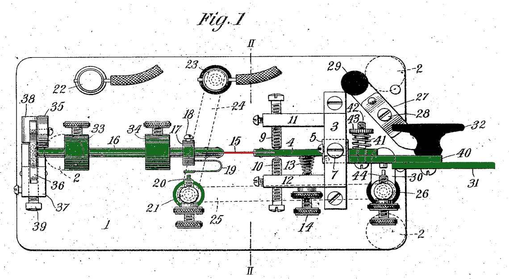

Vibroplex - understanding the semi-automatic timing
A Vibroplex
keyer is a mechanical keyer ("bug") invented in the early 1900s
(patent).
Bugs are known to be difficult to master, and the simple "bug
emulation mode" in many electronic keyers don't reproduce the
nuances of bug timing.
The slow motion simulations here explore the quirky interactions
of a bug's semi-automatic dits with operator timing.
The dah arm of a bug acts like a simple straight key, and is not
considered in the rest of this document.
The dit arm has a flat spring (15) after the hinge, allowing
that section of the arm to oscillate. The position of a weight
at the end of the arm controls the frequency of oscillation.

The core of the dit mechanism can be simplified to an
oscillating rod with a fixed end, and a free end with a weight.
In the neutral position, a damper is also placed to one side of
the center of oscillation. This stops any movement beyond that
point (ideally.)
Pressing the dit paddle rotates the dit arm by a small
angle. This moves the fixed base of the oscillating section to a
new position, causing the weighted arm to start oscillating
around the new position.
Explore this slow motion simulation of the dynamics of the
arm. Press the dit button to simulate pressing the dit
paddle. You should hear perfectly spaced dits and spaces if you
keep it pressed. Release it at various points of the oscillation
to see how it affects the dit space timing.
A light U-shaped spring contact on the arm forms a connection
whenever the arm goes past a limit. This results in a stream of
evenly spaced dits and spaces if the limit is adjusted
carefully. Releasing the arm moves it back to the neutral
position, where the damper quickly stops any oscillation.
Unlike an electronic keyer, releasing a vibroplex paddle too
early can cause a "short" dit, while releasing it too late can
cause an extra ("short") dit. There is also a half-dit phase lag
between pressing the paddle and the first dit being generated, until
the arm moves past the new center of oscillation.